Project 2: Local Feature Matching
The goal of this project is to find similarities in the images of the same objects/scenarios taken under different conditions. This is essentially helpful in determining whether the given set of images belong to the same scene. This technoque is widely used while creating a panorama where different pictures of the same object are taken from a different angle or under a different illumination.
This process of detecting and matching features involves a pipeline that comprises of three steps.
- Selecting interest points
- Getting the descriptor (feature vector) for each interest point
- Matching the features obtained from the different images to observe the closest match
The three parts required to implement these steps are described below.
Interest Point Detection
Implementation using the harris corner detector:
- The boundary interest points are suppressed using the feature-width:16 px.
- The image is filtered using a gaussian filter. This is an optional step, but it helps remove the high frequencies from the image that may contribute to noise.
- The derivatives of the image in the x and y direction are obtained.
- Compute the second moment matrix M, using Ixx, Iyy and Ixy. These values can be obtained using the derviatives obtained step 3.
- Weight this second moment matrix using a gaussian filter.
- Compute the cornerness function. This is computed as det(M) - alpha*trace(M)
- Threhold this function to allow only essentail interest points to take into consideration.
Obtaining feature vectors from interest points
Now that we have interest points, the following procedure is used to obtain feature vectors around these interest points:
- For each detected interest point, we consider an image patch with dimensions feature_width x feature_width. This can be tuned to obtain better results, but here we consider the feature_width to be 16px.
- For each of the image patch we divide it into windows of 4 x 4 px each.
- In each of these windows we find the dominant gradient for each pixel and place it into the respective bin. There are 8 bins in all each consisting of the number of counts of the gradients falling in a particular range between 0 to 360 degrees, being 45 degree apart.
- Hence for each interest point we get a feature vector that contains 128 elements(4*4*8).
- I have then normalized the feature vectors along the columns
Matching the feature vectors obtained from the two images
After obtaining the feature vecotrs, the next step would be to obtain the features that are similar in both the images. This helps in overlapping the images in the right way while creating the panorama:
- I have computed the distance between the features computed in image1 and image2 using pdist2. The distance metric i have used here is euclidean.
- Then sort the distance matrix obtained along the rows.
- From the sorted matrix obtain the ratio of the first nearest neighbor to the secong nearest neighbor.
- Threshold the value of this ratio.
- To obtain a better
Code snippets:
Interest point detection:
filter_gauss = fspecial('Gaussian', [5 7], 3);
gauss2 = fspecial('Gaussian', [30 30], 1);
%blurring the image(optional)
image_new = imfilter(image, filter_gauss);
%computing the gradients
[der_x,der_y] = imgradientxy(image_new,'sobel');
%double derivatives with the weight function being the guassian filter
der_xx = imfilter(der_x.*der_x, gauss2,'same');
der_yy = imfilter(der_y.*der_y, gauss2,'same');
der_xy = imfilter(der_x.*der_y, gauss2,'same');
%the result of the harris corner detector
r = der_xx.*der_yy - der_xy.*der_xy - alpha.*(der_xx+der_yy).*(der_xx+der_yy);
threshold = 0.001;
[y,x] = find(r>threshold);
confidence = r(r>0);
Obtaining feature vectors:
theta = atan2(gradient_y,gradient_x);
theta = radtodeg(theta);
theta = floor(theta/45);
theta = theta+4;
for x1 = 1:4
for y1 = 1:4
tangents = theta(x1*4-3:x1*4, y1*4-3:y1*4);
for bins = 1:8
feat = eq(tangents,bins);
%getting the feature vector and weighting according to the
%count of matches
features(i,(x1*8 + y1*32) + bins) = sum(sum(feat));
end
end
end
Match feature vectors:
%pdist2 provides the pairwise distance between the features
dist = pdist2(features1, features2, 'euclidean');
% Sort each row of the distance matrix
[sort_dist, index] = sort(dist, 2);
%[idx,dist] = knnsearch(features1,features2);
nn_measure = (sort_dist(:,1)./sort_dist(:,2));
Match feature vectors with KNN Search (extra credit):
MD1 = KDTreeSearcher(features1);
MD2 = KDTreeSearcher(features2);
[idx1,dist] = knnsearch(features1,features2,'K',2,'NSMethod','kdtree');
matches(:,1) = idx1(:,1);
matches(:,2) = 1:size(features2,1);
confidence_values = dist(:,1)./dist(:,2);
[sort_confidence,indices] = sort(confidence_values);
Scale Invariance for interest points(extra credit):
%proj2.m
[x01, y01] = get_interest_points(image1_bw, feature_width,1);
[x02, y02] = get_interest_points(image2_bw, feature_width,1);
scale_factor = 0.5;
image1_scale1 = imresize(image1_bw, scale_factor, 'bilinear');
image2_scale1 = imresize(image2_bw, scale_factor, 'bilinear');
[x11, y11] = get_interest_points(image1_scale1, feature_width,scale_factor);
[x12, y12] = get_interest_points(image2_scale1, feature_width,scale_factor);
scale_factor1 = 0.25;
image1_scale2 = imresize(image1_bw,scale_factor1,'bilinear');
image2_scale2 = imresize(image2_bw,scale_factor1,'bilinear');
[x21, y21] = get_interest_points(image1_scale2, feature_width,scale_factor1);
[x22, y22] = get_interest_points(image2_scale2, feature_width,scale_factor1);
scale_factor2 = 0.125;
image1_scale3 = imresize(image1_bw,scale_factor2,'bilinear');
image2_scale3 = imresize(image2_bw,scale_factor2,'bilinear');
[x31, y31] = get_interest_points(image1_scale3, feature_width,scale_factor2);
[x32, y32] = get_interest_points(image2_scale3, feature_width,scale_factor2);
x1 = [x01;x11;x21;x31];
x2 = [x02;x12;x22;x32];
y1 = [y01;y11;y21;y31];
y2 = [y02;y12;y22;y32];
%get_interest_points.m
%I have included another input parameter for the get_interest_points i.e. scale. While the intial computation this has value 1 and then
%the value changes to 0.5, 0.25 and 0.125 gradually.
threshold = 0.001*scale
By using different scales corresponding to 1, 0.5, 0.25 and 0.125, I obtain the points that belong to the different scales. I then compute the interest points corresponding to the thresholds scaled down using the scaling factor. These interest points now help get more localised information and hence the accuracy improves to 93%.
Scale Invariance for features(extra credit):
%proj2.m
[image1_features01] = get_features(image1_bw, x01, y01, feature_width);
[image2_features02] = get_features(image2_bw, x02, y02, feature_width);
scale_factor1 = 0.5;
image1_scale1 = imresize(image1_bw, scale_factor1, 'bilinear');
image2_scale1 = imresize(image2_bw, scale_factor1, 'bilinear');
[image1_features11] = get_features(image1_scale1, x11, y11, feature_width);
[image2_features12] = get_features(image2_scale1, x12, y12, feature_width);
scale_factor2 = 0.25;
image1_scale2 = imresize(image1_bw, scale_factor2, 'bilinear');
image2_scale2 = imresize(image2_bw, scale_factor2, 'bilinear');
[image1_features21] = get_features(image1_scale2, x21, y21, feature_width);
[image2_features22] = get_features(image2_scale2, x22, y22, feature_width);
scale_factor3 = 0.125;
image1_scale3 = imresize(image1_bw, scale_factor3, 'bilinear');
image2_scale3 = imresize(image2_bw, scale_factor3, 'bilinear');
[image1_features31] = get_features(image1_scale3, x31, y31, feature_width);
[image2_features32] = get_features(image2_scale3, x32, y32, feature_width);
[image1_features] = [image1_features01;image1_features11;image1_features21;image1_features31];
[image2_features] = [image2_features02;image2_features12;image2_features22;image2_features32];
%get_interest_points.m
%I have included another input parameter for the get_interest_points i.e. scale. While the intial computation this has value 1 and then
%the value changes to 0.5, 0.25 and 0.125 gradually.
threshold = 0.001*scale
By using different scales corresponding to 1, 0.5, 0.25 and 0.125, I obtain the points that belong to the different scales. I then compute the feture vectors corresponding to these scales. These interest points now help get more localised information but this creates problems while computing the match features.Points closer to each other but belonging to different scales cause problems. Hence the accuracy decreases to 74%.
Results in a table
With euclidean distance
 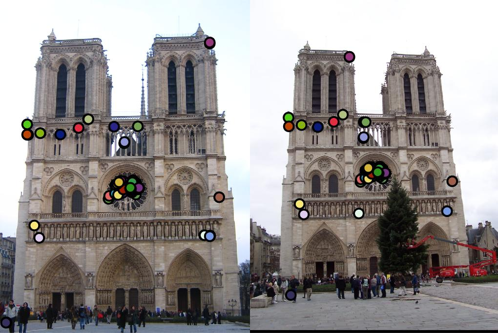
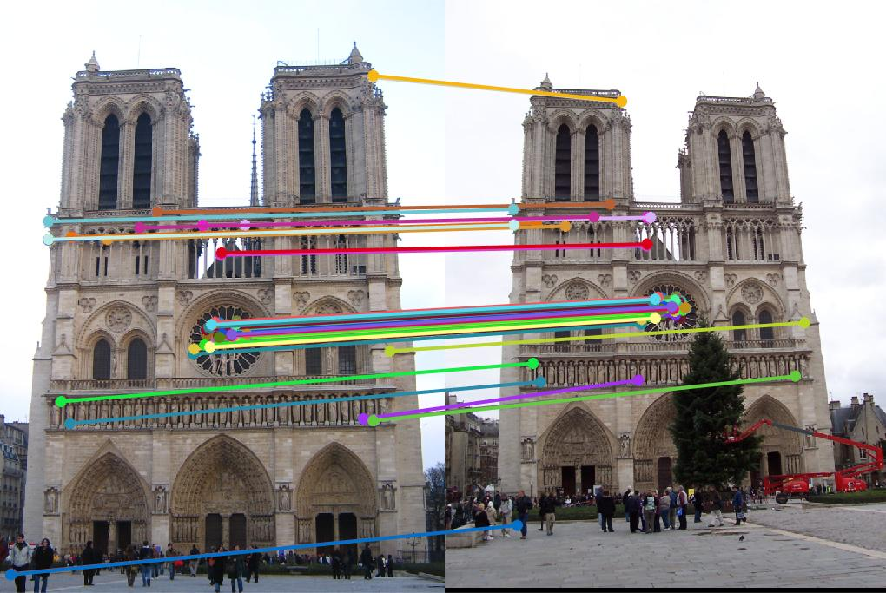
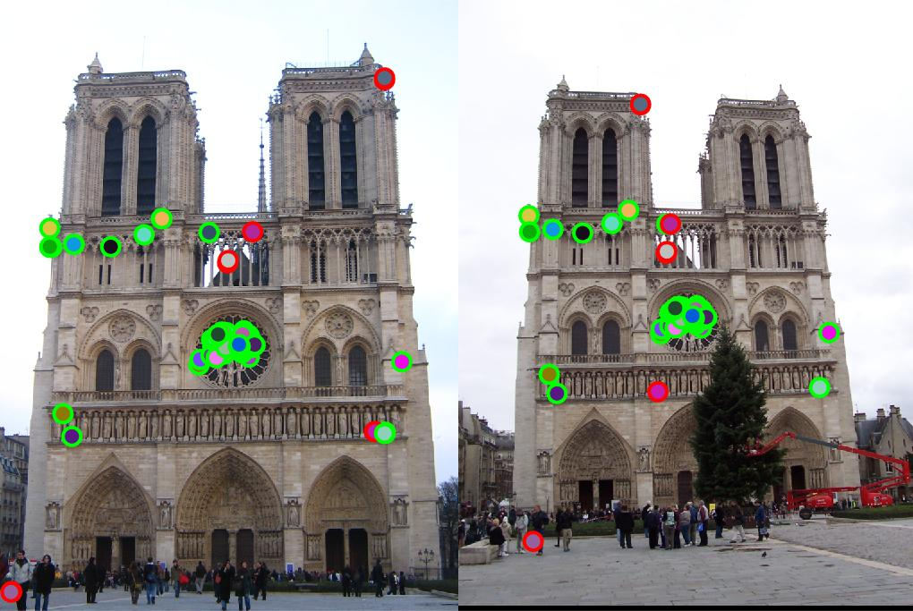
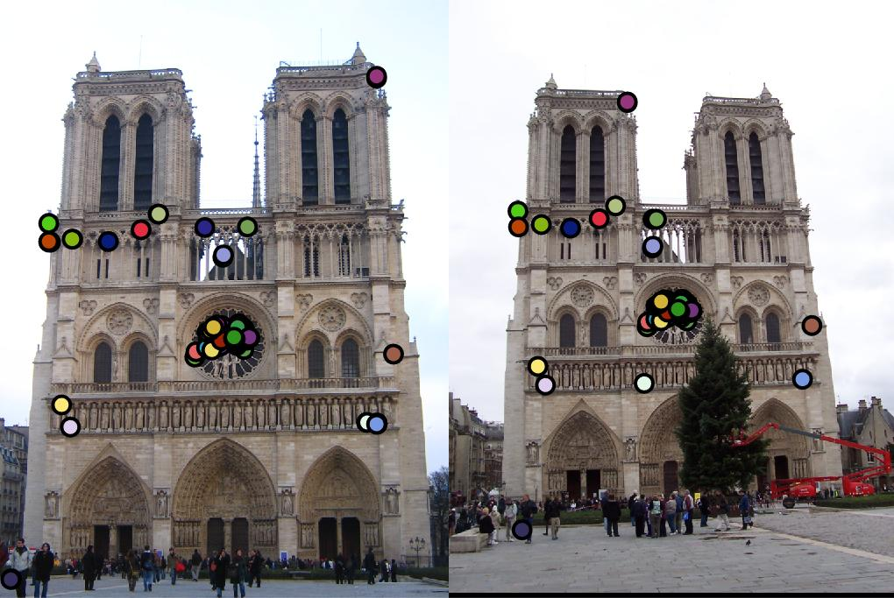
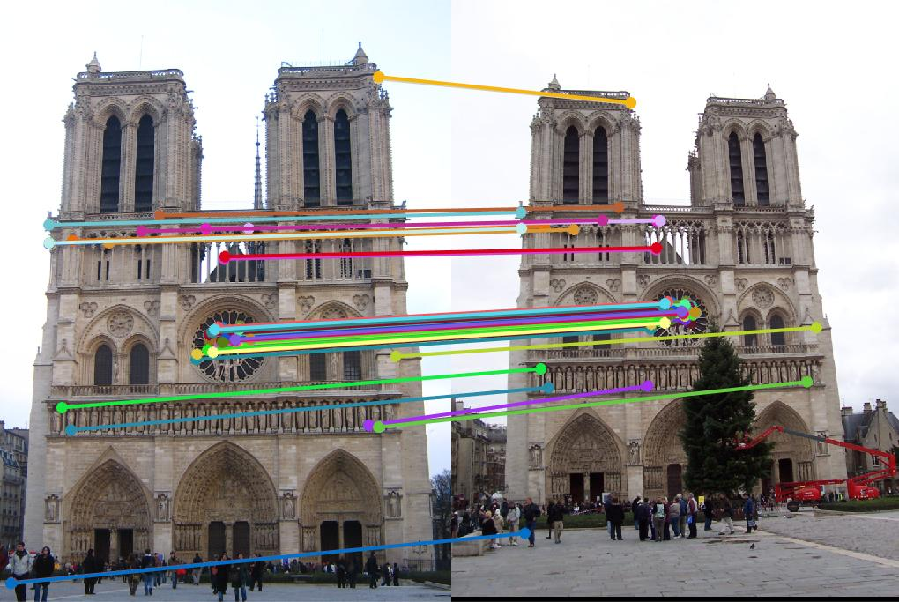
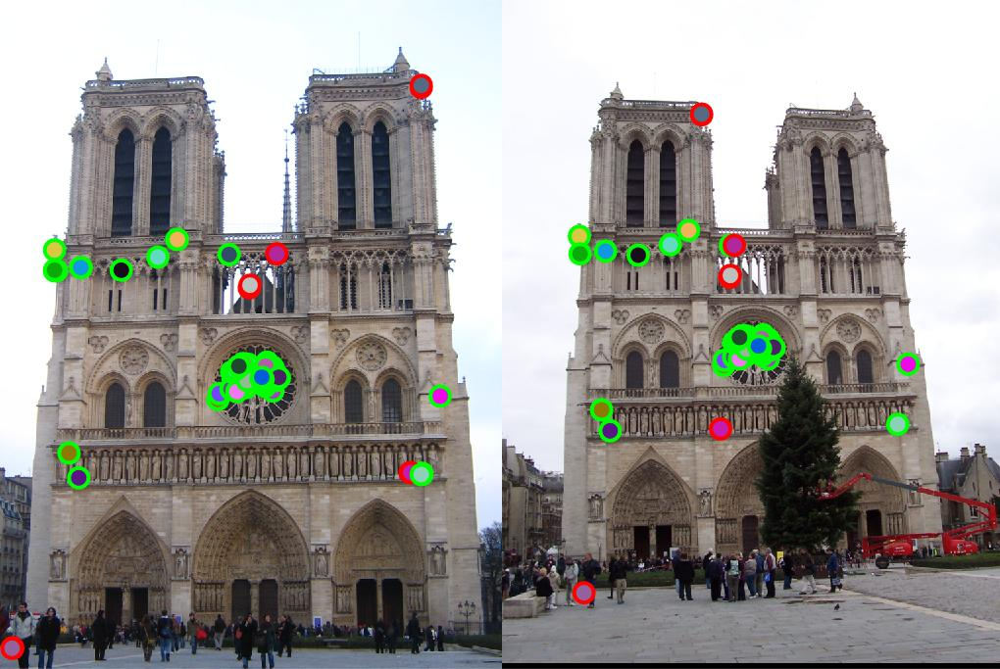
|
|
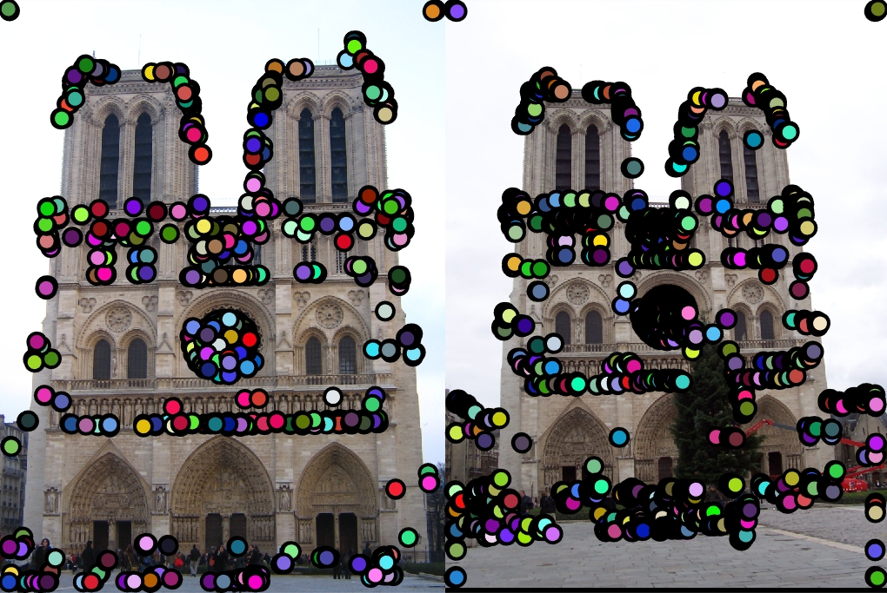
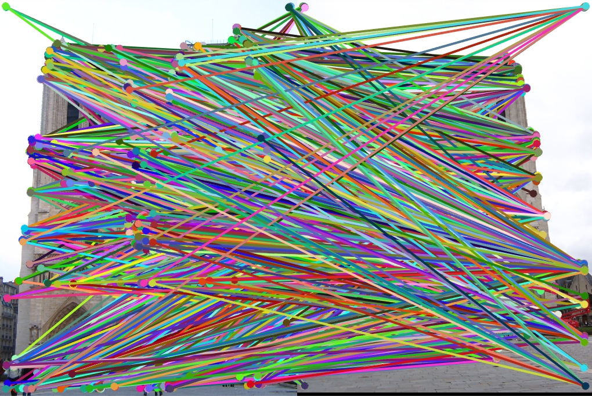
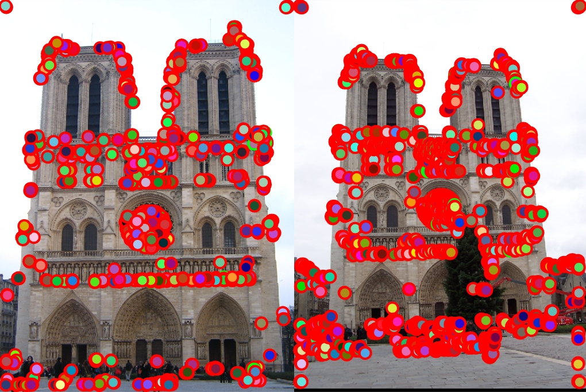
|
The parameters used are k=2 i.e. find the two nearest neighbors while using the 'kdtree' NSMethod. 'kdtree' creates and uses a Kd-tree to find nearest neighbors.k-d tree (short for k-dimensional tree) is a space-partitioning data structure for organizing points in a k-dimensional space. k-d trees are a useful data structure for several applications, such as searches involving a multidimensional search key.
Scale Invariance - Interest Points [Extra Credit]
|
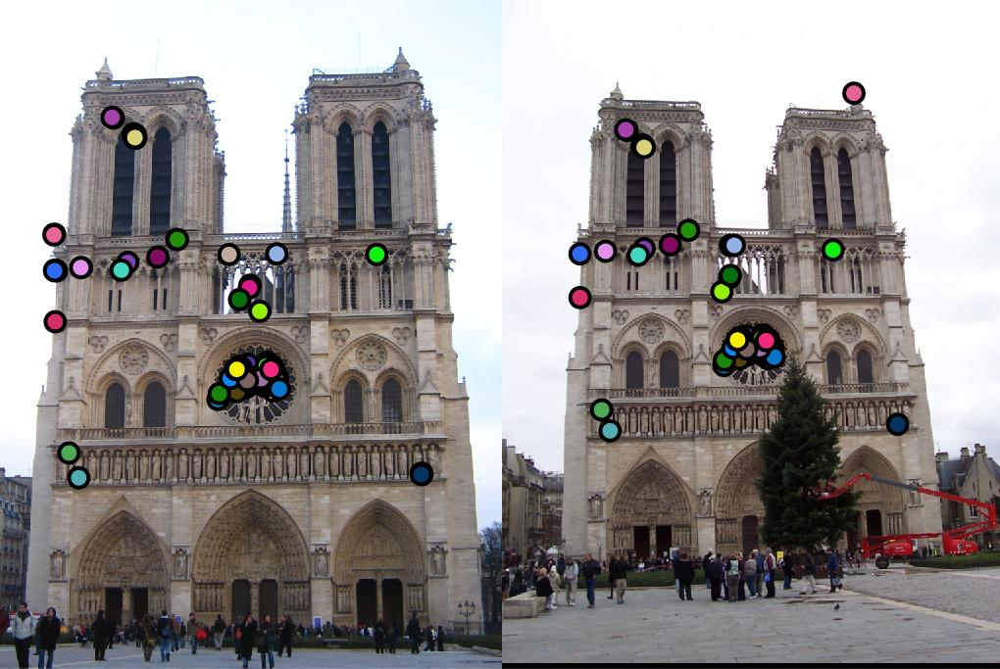
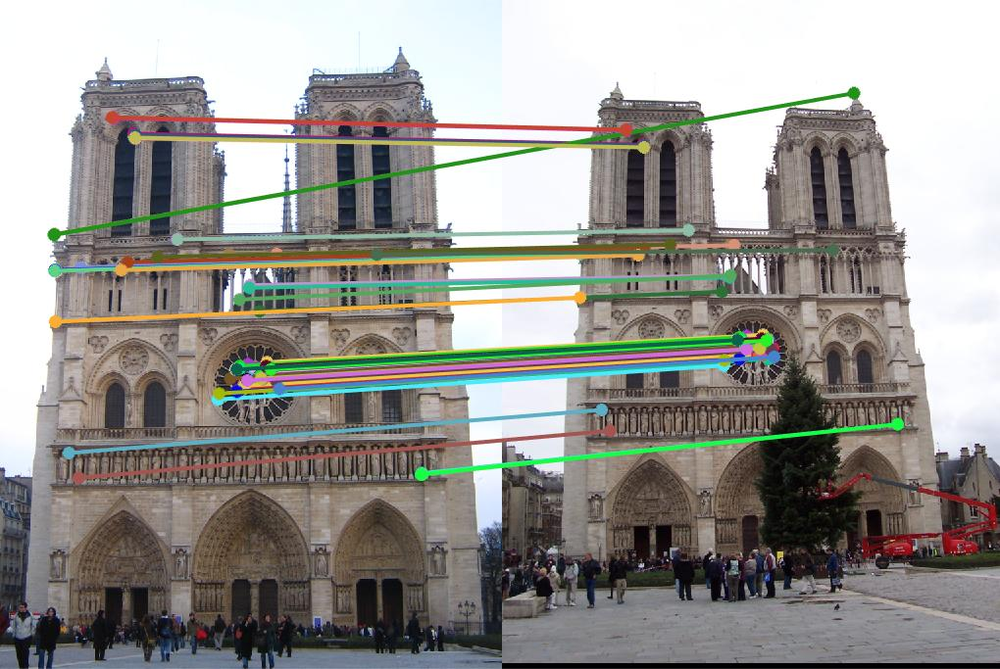
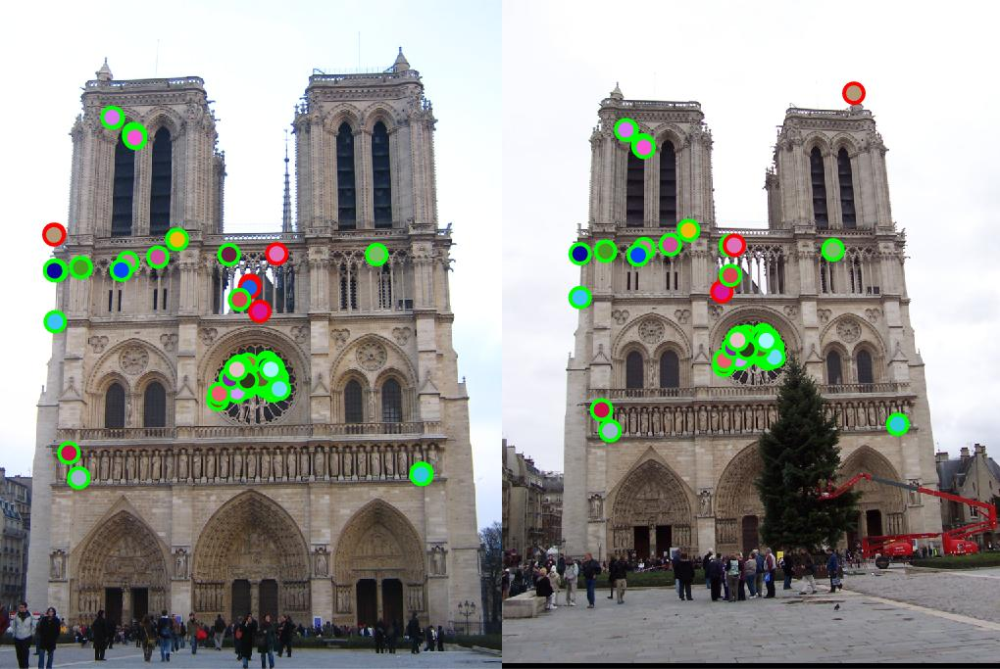
|
Scale Invariance - Get Features [Extra Credit]
|
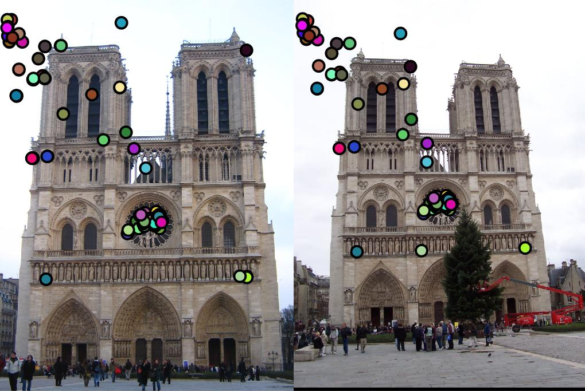
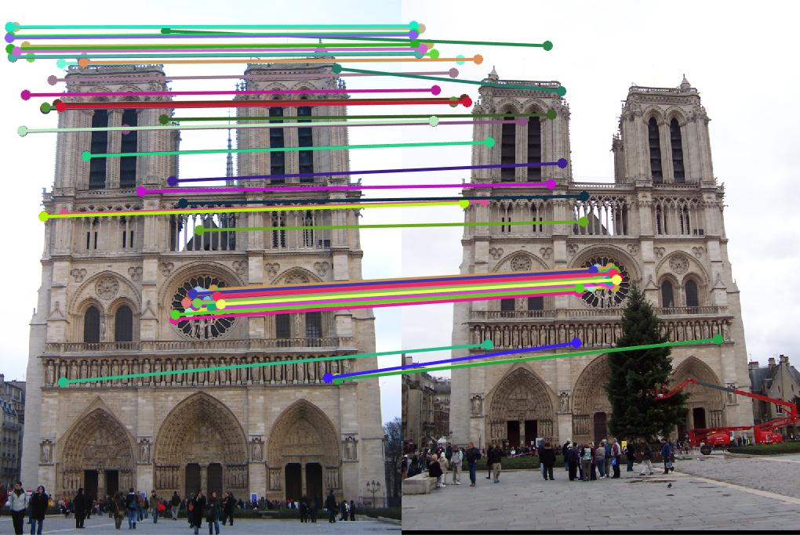
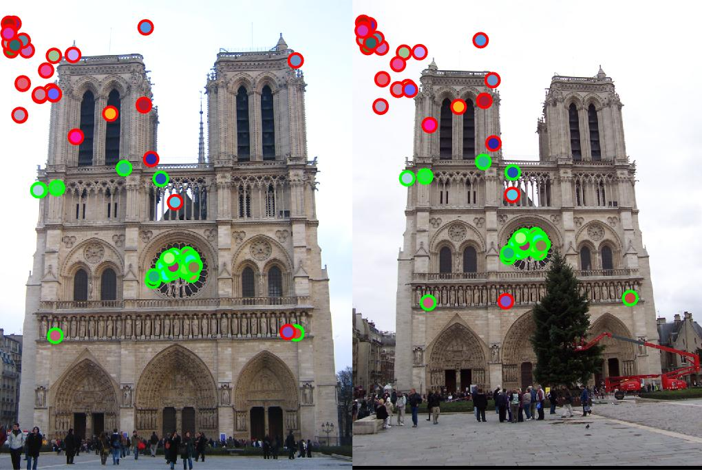
|
Conclusion
An accuracy of 89% is obtained on the Notre Dam image on using pdist2. This is using a threhold of 0.90 in match features. If I reduce the threshold to 0.80 the accuracy increases to around 91%. However, with knnsearch the accuracy is increased to 91% with the top 100 matches (the images attached are for all matches). Scale invariance for interest points raises the accuracy to 93%, while it doesn't do so well for the feature vectors giving an accuracy of 74%. This is due to the points lining up near edges while being scaled down and also there being slight differences in distances between points in one scale to the points in a different scale.The project shows how the similarities in images can be detected and used to create a series of overlapping images or a panorama.